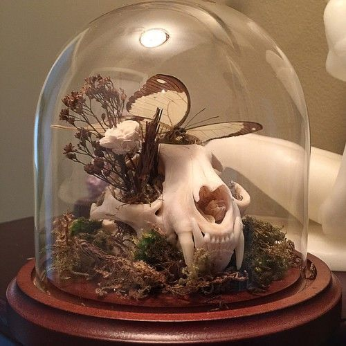
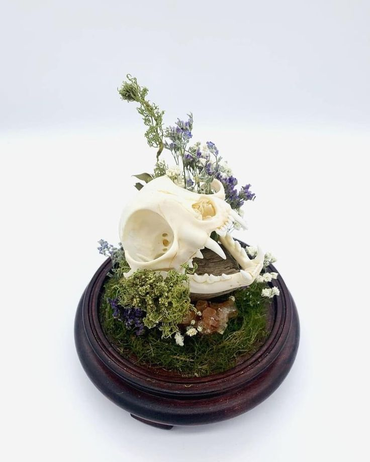
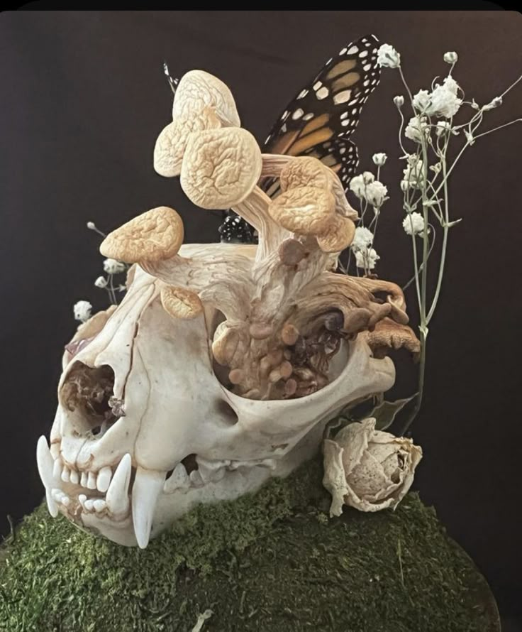
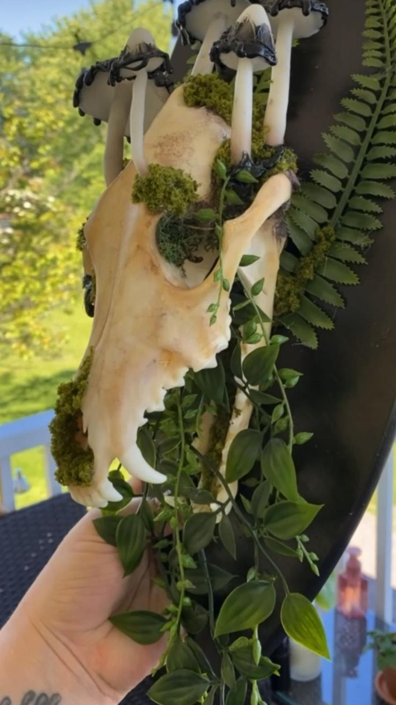

What is our work at Brittle Bones?
At Brittle Bones Preservations, we transform the finite into the everlasting through the specialized art of bone taxidermy and articulation. We believe that every life, and the inherent beauty of its natural form, deserves to be honored beyond its fleeting moment.
Our unique craft focuses on two deeply meaningful areas:
𖤐 Unique Art & Sculptural Pieces: Beyond memorials, we celebrate the incredible architecture of the skeletal form through original works of art. Our collections range from intricate tabletop displays to striking large-scale installations, each piece showcasing the profound beauty and complexity found in nature's design. These pieces are sought after by collectors and individuals who appreciate unique, meaningful art that speaks to the cycles of life and natural history.
𖤐 Personalized Pet Memorials: For those who have lost a beloved animal companion, we offer a dignified and artistic way to remember. We respectfully clean, preserve, and articulate your pet's bones into a beautiful, lasting memorial piece. These custom tributes allow you to cherish the memory and unique form of your companion for generations, turning grief into tangible homage.
Every project at Brittle Bones Preservations is an act of deep reverence, meticulous craftsmanship, and artistic vision. We ensure all materials are ethically sourced and handled with the utmost care, transforming natural remains into timeless art that sparks contemplation and celebrates enduring beauty.
Our work
Here is some of our featured work from our amazing team!
(Disclaimer!! For website purposes only. I do not claim to have created or own any of these pieces. All photots sourced from Pintrest.)

Encased beneath a gleaming glass cloche, this piece, titled "Whispers of the Wild," captures a serene moment where life and stillness intertwine. A delicately preserved butterfly rests atop a carefully cleaned animal skull, nestled amongst a bed of lush moss and dried botanicals. This artful arrangement celebrates the intricate beauty found in nature's cycle, honoring both the fleeting grace of life and the enduring elegance of what remains. It serves as a poignant reminder of transformation and the profound artistry inherent in the natural world.

This exquisite display, "Beneath The Bloom," presents a beautifully cleaned skull nestled within a vibrant miniature landscape. Surrounded by soft green moss, delicate dried purple and white wildflowers, and a touch of sparkling crystal, this piece evokes the quiet rebirth and organic beauty found in nature's most hidden corners. It's a testament to the enduring presence and intricate artistry that emerges when the wild reclaims and adorns what remains.

This evocative piece, "Symbiosis of the Forest Floor," presents a striking tableau where the cycles of life and decomposition beautifully intertwine. A weathered animal skull forms the foundation, intricately adorned with a cluster of natural mushrooms emerging from its form, alongside delicate dried foliage, and the striking wing of a monarch butterfly. Set upon a bed of deep green moss, this creation powerfully illustrates nature's profound ability to reclaim, transform, and infuse even the remnants of life with new, organic beauty.

This piece, "Reclaiming the Wild," offers a fascinating glimpse into one of our ongoing projects. Currently being shaped by a member of the Brittle Bones team, this installation showcases a beautifully preserved animal skull mounted on a sleek plaque. The skull is actively being integrated into an "earthy grungy" theme, featuring striking, large mushrooms emerging from the bone structure, vibrant green moss, and trailing dark leafy vines and Ferns. This work celebrates the powerful visual of nature reclaiming its form, serving as an exciting preview of how our artists transform raw materials into bold, intricate statements of enduring beauty.

Captured amidst a natural forest setting, this profound art piece titled "Fondly Found Free" is a stunning example of complex preservation and artistic articulation. Utilizing a preserved fox form, the creation features articulated skeletal elements emerging along the spine and face, intertwined with moss, crystals, and dark foliage. This composition celebrates the animal's memory by fusing its preserved fur and bone into a single, cohesive tableau, exploring themes of natural decomposition, transformation, and the enduring beauty of life's final architecture.